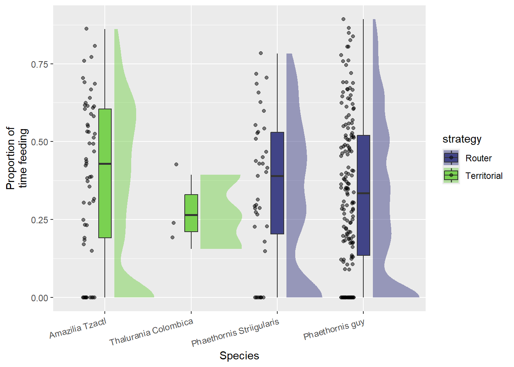
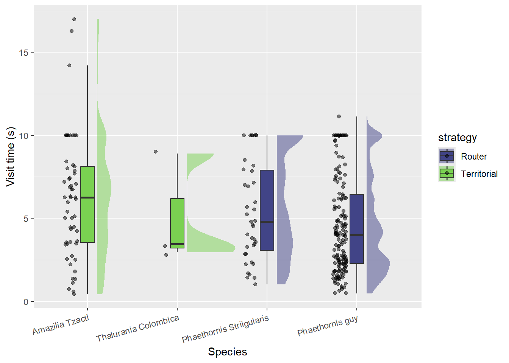

cols <-viridis(10)# raincoud plot:fill_color <-adjustcolor("#B4DE2C99", 0.6)ggplot(dat, aes(y = prop.probed, x = Hummer_Species, fill = strategy)) +# add half-violin from {ggdist} package ggdist::stat_halfeye(# fill = fill_color,alpha =0.5,# custom bandwidthadjust = .5,# adjust heightwidth = .6,.width =0,# move geom to the crightjustification =-.2,point_colour =NA ) +scale_fill_viridis_d(begin =0.2, end =0.8) +geom_boxplot(# fill = fill_color,width = .15,# remove outliersoutlier.shape =NA# `outlier.shape = NA` works as well ) +# add justified jitter from the {gghalves} package gghalves::geom_half_point(# color = fill_color,# draw jitter on the leftside ="l",# control range of jitterrange_scale = .4,# add some transparencyalpha = .5, ) +labs(x ="Species", y ="Proportion of\ntime feeding") +theme(axis.text.x =element_text(angle =15, hjust =1))

Code
mod <-lm(prop.probed ~ Hummer_Species, dat)summary(mod)
Call:
lm(formula = prop.probed ~ Hummer_Species, data = dat)
Residuals:
Min 1Q Median 3Q Max
-0.3922 -0.1837 0.0020 0.1834 0.5529
Coefficients:
Estimate Std. Error t value Pr(>|t|)
(Intercept) 0.39219 0.03259 12.034 <2e-16 ***
Hummer_SpeciesThalurania Colombica -0.12052 0.14574 -0.827 0.409
Hummer_SpeciesPhaethornis Striigularis -0.04198 0.05113 -0.821 0.412
Hummer_SpeciesPhaethornis guy -0.05266 0.03792 -1.389 0.166
---
Signif. codes: 0 '***' 0.001 '**' 0.01 '*' 0.05 '.' 0.1 ' ' 1
Residual standard error: 0.246 on 256 degrees of freedom
Multiple R-squared: 0.008735, Adjusted R-squared: -0.002881
F-statistic: 0.752 on 3 and 256 DF, p-value: 0.5221
Number of flowers probed
Code
ggplot(dat, aes(y = Num_Probed_Flowers, x = Hummer_Species, fill = strategy)) +# add half-violin from {ggdist} package ggdist::stat_halfeye(# fill = fill_color,alpha =0.5,# custom bandwidthadjust = .5,# adjust heightwidth = .6,.width =0,# move geom to the crightjustification =-.2,point_colour =NA ) +scale_fill_viridis_d(begin =0.2, end =0.8) +geom_boxplot(# fill = fill_color,width = .15,# remove outliersoutlier.shape =NA# `outlier.shape = NA` works as well ) +# add justified jitter from the {gghalves} package gghalves::geom_half_point(# color = fill_color,# draw jitter on the leftside ="l",# control range of jitterrange_scale = .4,# add some transparencyalpha = .5, ) +labs(x ="Species", y ="Number of flowers probed") +theme(axis.text.x =element_text(angle =15, hjust =1))
Code
mod <-lm(Num_Probed_Flowers ~ Hummer_Species, dat)summary(mod)
Call:
lm(formula = Num_Probed_Flowers ~ Hummer_Species, data = dat)
Residuals:
Min 1Q Median 3Q Max
-1.7179 -0.6335 0.0000 0.3684 5.3684
Coefficients:
Estimate Std. Error t value Pr(>|t|)
(Intercept) 1.631579 0.173359 9.412 <2e-16
Hummer_SpeciesThalurania Colombica -0.631579 0.775286 -0.815 0.416
Hummer_SpeciesPhaethornis Striigularis 0.086370 0.271988 0.318 0.751
Hummer_SpeciesPhaethornis guy 0.001961 0.201726 0.010 0.992
(Intercept) ***
Hummer_SpeciesThalurania Colombica
Hummer_SpeciesPhaethornis Striigularis
Hummer_SpeciesPhaethornis guy
---
Signif. codes: 0 '***' 0.001 '**' 0.01 '*' 0.05 '.' 0.1 ' ' 1
Residual standard error: 1.309 on 256 degrees of freedom
Multiple R-squared: 0.003354, Adjusted R-squared: -0.008325
F-statistic: 0.2872 on 3 and 256 DF, p-value: 0.8346
Time spent probing
Code
ggplot(dat, aes(y =`Time_Probed (s.ms)`, x = Hummer_Species, fill = strategy)) +# add half-violin from {ggdist} package ggdist::stat_halfeye(# fill = fill_color,alpha =0.5,# custom bandwidthadjust = .5,# adjust heightwidth = .6,.width =0,# move geom to the crightjustification =-.2,point_colour =NA ) +scale_fill_viridis_d(begin =0.2, end =0.8) +geom_boxplot(# fill = fill_color,width = .15,# remove outliersoutlier.shape =NA# `outlier.shape = NA` works as well ) +# add justified jitter from the {gghalves} package gghalves::geom_half_point(# color = fill_color,# draw jitter on the leftside ="l",# control range of jitterrange_scale = .4,# add some transparencyalpha = .5, ) +labs(x ="Species", y ="Time probed (s)") +theme(axis.text.x =element_text(angle =15, hjust =1))
Code
mod <-lm(`Time_Probed (s.ms)`~ Hummer_Species, dat)summary(mod)
Call:
lm(formula = `Time_Probed (s.ms)` ~ Hummer_Species, data = dat)
Residuals:
Min 1Q Median 3Q Max
-2.6477 -1.0891 -0.2127 0.7928 7.6923
Coefficients:
Estimate Std. Error t value Pr(>|t|)
(Intercept) 2.6477 0.2097 12.626 < 2e-16 ***
Hummer_SpeciesThalurania Colombica -1.2544 0.9378 -1.338 0.1822
Hummer_SpeciesPhaethornis Striigularis -0.6280 0.3290 -1.909 0.0574 .
Hummer_SpeciesPhaethornis guy -1.1921 0.2440 -4.885 1.82e-06 ***
---
Signif. codes: 0 '***' 0.001 '**' 0.01 '*' 0.05 '.' 0.1 ' ' 1
Residual standard error: 1.583 on 256 degrees of freedom
Multiple R-squared: 0.08867, Adjusted R-squared: 0.07799
F-statistic: 8.303 on 3 and 256 DF, p-value: 2.728e-05
Total visit time
Code
ggplot(dat, aes(y =`Total_Visit_Time (s.ms)`, x = Hummer_Species, fill = strategy)) +# add half-violin from {ggdist} package ggdist::stat_halfeye(# fill = fill_color,alpha =0.5,# custom bandwidthadjust = .5,# adjust heightwidth = .6,.width =0,# move geom to the crightjustification =-.2,point_colour =NA ) +scale_fill_viridis_d(begin =0.2, end =0.8) +geom_boxplot(# fill = fill_color,width = .15,# remove outliersoutlier.shape =NA# `outlier.shape = NA` works as well ) +# add justified jitter from the {gghalves} package gghalves::geom_half_point(# color = fill_color,# draw jitter on the leftside ="l",# control range of jitterrange_scale = .4,# add some transparencyalpha = .5, ) +labs(x ="Species", y ="Visit time (s)") +theme(axis.text.x =element_text(angle =15, hjust =1))

Code
mod <-lm(`Total_Visit_Time (s.ms)`~ Hummer_Species, dat)summary(mod)
Call:
lm(formula = `Total_Visit_Time (s.ms)` ~ Hummer_Species, data = dat)
Residuals:
Min 1Q Median 3Q Max
-5.8144 -2.4148 -0.5667 1.9060 10.7556
Coefficients:
Estimate Std. Error t value Pr(>|t|)
(Intercept) 6.2444 0.4119 15.160 < 2e-16 ***
Hummer_SpeciesThalurania Colombica -1.1411 1.8420 -0.619 0.536170
Hummer_SpeciesPhaethornis Striigularis -0.8682 0.6462 -1.344 0.180288
Hummer_SpeciesPhaethornis guy -1.6571 0.4793 -3.457 0.000638 ***
---
Signif. codes: 0 '***' 0.001 '**' 0.01 '*' 0.05 '.' 0.1 ' ' 1
Residual standard error: 3.11 on 256 degrees of freedom
Multiple R-squared: 0.04615, Adjusted R-squared: 0.03497
F-statistic: 4.129 on 3 and 256 DF, p-value: 0.006984
Takeaways
Based on statistical analysis, there is no evidence to conclude that Territorial hummingbird species spend more time feeding than Router hummingbird species. However, P. guy was shown to spend less time visiting Zingiber spectabile and less time feeding. P. Striigularis had a similar trend but nothing of significant finding.
---title: Analysis of Hummingbird Feeders & Zingiber spectabileauthor: <a href="http://researcher.website.com/">Ariyana Parker</a>date: "4/25/2024"toc: truetoc-depth: 2toc-location: leftnumber-sections: truehighlight-style: pygmentsformat: html: df-print: kable code-fold: show code-tools: true css: qmd.csseditor_options: chunk_output_type: console---<!-- this code add line numbers to code blocks --><!-- only works when code folding is not used in yaml (code_folding: show) -->```{=html}<style>body { counter-reset: source-line 0; }pre.numberSource code { counter-reset: none; }</style>``````{r set root directory, echo = FALSE}# set working directory knitr::opts_knit$set(root.dir ="..")``````{r add link to github repo, echo = FALSE, results='asis'}# print link to github repo if anyif (file.exists("./.git/config")){ config <-readLines("./.git/config") url <-grep("url", config, value =TRUE) url <-gsub("\\turl = |.git$", "", url)cat("\nSource code and data found at [", url, "](", url, ")", sep ="") }``````{r setup style, echo = FALSE, message = FALSE, warning=FALSE}# options to customize chunk outputsknitr::opts_chunk$set(class.source ="numberLines lineAnchors", # for code line numberstidy.opts =list(width.cutoff =65), tidy =TRUE,message =FALSE )```<!-- skyblue box -->::: {.alert .alert-info}# Purpose {.unnumbered .unlisted}- The first goal of this report is to determine the correlation of Territorial species and feeding times.- The second goal of this report is to find a difference in feeding behaviors between Router species and Territorial species.::: <!-- light brown box --> ```# Load packages {.unnumbered .unlisted}```{r}library(sketchy)load_packages(packages = c("readxl", "ggplot2", "viridis", "ggdist", "gghalves"))```# Raw data```{r}dat <-read_xlsx("./data/raw/CS Datasheet.xlsx", na ="N/A")head(dat, 4)```# Format data```{r}# fix species namesdat$Hummer_Species <-gsub("Phaethornis Guy", "Phaethornis guy", dat$Hummer_Species)dat <- dat[dat$Hummer_Species !="UNK", ]dat$Num_Probed_Flowers <-as.numeric(dat$Num_Probed_Flowers)dat$`Time_Probed (s.ms)`<-as.numeric(dat$`Time_Probed (s.ms)`)dat$prop.probed <- dat$`Time_Probed (s.ms)`/ dat$`Total_Visit_Time (s.ms)`dat <- dat[dat$prop.probed <=1, ]dat <- dat[!is.na(dat$Hummer_Species), ]dat$strategy <-ifelse(dat$Hummer_Species %in%c("Phaethornis Striigularis", "Phaethornis guy"), "Router", "Territorial")dat$Hummer_Species <-factor(dat$Hummer_Species, levels =c( "Amazilia Tzactl", "Thalurania Colombica", "Phaethornis Striigularis", "Phaethornis guy"))```Sample sizes```{r}as.data.frame(table(dat$Hummer_Species))```# Exploratory graphs / statsProportion of time feeding```{r}cols <-viridis(10)# raincoud plot:fill_color <-adjustcolor("#B4DE2C99", 0.6)ggplot(dat, aes(y = prop.probed, x = Hummer_Species, fill = strategy)) +# add half-violin from {ggdist} package ggdist::stat_halfeye(# fill = fill_color,alpha =0.5,# custom bandwidthadjust = .5,# adjust heightwidth = .6,.width =0,# move geom to the crightjustification =-.2,point_colour =NA ) +scale_fill_viridis_d(begin =0.2, end =0.8) +geom_boxplot(# fill = fill_color,width = .15,# remove outliersoutlier.shape =NA# `outlier.shape = NA` works as well ) +# add justified jitter from the {gghalves} package gghalves::geom_half_point(# color = fill_color,# draw jitter on the leftside ="l",# control range of jitterrange_scale = .4,# add some transparencyalpha = .5, ) +labs(x ="Species", y ="Proportion of\ntime feeding") +theme(axis.text.x =element_text(angle =15, hjust =1)) mod <-lm(prop.probed ~ Hummer_Species, dat)summary(mod)```Number of flowers probed```{r}ggplot(dat, aes(y = Num_Probed_Flowers, x = Hummer_Species, fill = strategy)) +# add half-violin from {ggdist} package ggdist::stat_halfeye(# fill = fill_color,alpha =0.5,# custom bandwidthadjust = .5,# adjust heightwidth = .6,.width =0,# move geom to the crightjustification =-.2,point_colour =NA ) +scale_fill_viridis_d(begin =0.2, end =0.8) +geom_boxplot(# fill = fill_color,width = .15,# remove outliersoutlier.shape =NA# `outlier.shape = NA` works as well ) +# add justified jitter from the {gghalves} package gghalves::geom_half_point(# color = fill_color,# draw jitter on the leftside ="l",# control range of jitterrange_scale = .4,# add some transparencyalpha = .5, ) +labs(x ="Species", y ="Number of flowers probed") +theme(axis.text.x =element_text(angle =15, hjust =1)) mod <-lm(Num_Probed_Flowers ~ Hummer_Species, dat)summary(mod)```Time spent probing```{r}ggplot(dat, aes(y =`Time_Probed (s.ms)`, x = Hummer_Species, fill = strategy)) +# add half-violin from {ggdist} package ggdist::stat_halfeye(# fill = fill_color,alpha =0.5,# custom bandwidthadjust = .5,# adjust heightwidth = .6,.width =0,# move geom to the crightjustification =-.2,point_colour =NA ) +scale_fill_viridis_d(begin =0.2, end =0.8) +geom_boxplot(# fill = fill_color,width = .15,# remove outliersoutlier.shape =NA# `outlier.shape = NA` works as well ) +# add justified jitter from the {gghalves} package gghalves::geom_half_point(# color = fill_color,# draw jitter on the leftside ="l",# control range of jitterrange_scale = .4,# add some transparencyalpha = .5, ) +labs(x ="Species", y ="Time probed (s)") +theme(axis.text.x =element_text(angle =15, hjust =1)) mod <-lm(`Time_Probed (s.ms)`~ Hummer_Species, dat)summary(mod)```Total visit time ```{r}ggplot(dat, aes(y =`Total_Visit_Time (s.ms)`, x = Hummer_Species, fill = strategy)) +# add half-violin from {ggdist} package ggdist::stat_halfeye(# fill = fill_color,alpha =0.5,# custom bandwidthadjust = .5,# adjust heightwidth = .6,.width =0,# move geom to the crightjustification =-.2,point_colour =NA ) +scale_fill_viridis_d(begin =0.2, end =0.8) +geom_boxplot(# fill = fill_color,width = .15,# remove outliersoutlier.shape =NA# `outlier.shape = NA` works as well ) +# add justified jitter from the {gghalves} package gghalves::geom_half_point(# color = fill_color,# draw jitter on the leftside ="l",# control range of jitterrange_scale = .4,# add some transparencyalpha = .5, ) +labs(x ="Species", y ="Visit time (s)") +theme(axis.text.x =element_text(angle =15, hjust =1)) mod <-lm(`Total_Visit_Time (s.ms)`~ Hummer_Species, dat)summary(mod)```<!-- light green box -->::: {.alert .alert-success}# Takeaways {.unnumbered .unlisted}Based on statistical analysis, there is no evidence to conclude that Territorial hummingbird species spend more time feeding than Router hummingbird species. However, P. guy was shown to spend less time visiting Zingiber spectabile and less time feeding. P. Striigularis had a similar trend but nothing of significant finding. ::: <!-- '---' adds a gray vertical line -->--- <!-- add packages used, system details and versions --># Session information {.unnumbered .unlisted}```{r session info, echo=F}sessionInfo()```